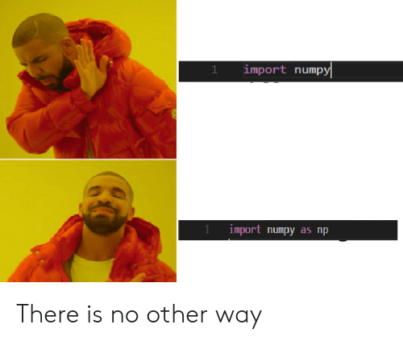

import numpy as npPython LevelUP: Data Science by Appsilon
Tydzień 1 - Numpy

Tydzień 1 - Numpy (ale najpierw listy)
x = np.arange(10).reshape((2, 5))y = x.reshape((5,2))xarray([[0, 1, 2, 3, 4],
[5, 6, 7, 8, 9]])y[0] = 12yarray([[12, 12],
[ 2, 3],
[ 4, 5],
[ 6, 7],
[ 8, 9]])xarray([[12, 12, 2, 3, 4],
[ 5, 6, 7, 8, 9]])Podstawą wszystkich obliczeń na komputerze są… liczby. Rzadko kiedy operujemy jednak na pojedynczych liczbach, z reguły pracujemy na całych tablicach/wektorach liczb. Do tego właśnie służy numpy.
Ktoś mógłby zapytać co złego jest w wbudowanym typie list. Zacznijmy od przyjrzenia mu się bliżej.
1 Listy przypomnienie
1.1 Tworzenie listy
l = [1, 2, 3]
l[1, 2, 3]type(l), l[0], l[-1], len(l), sum(l)(list, 1, 3, 3, 6)Lista może mieć w sobie elementy różnych typów:
l2 = [1, "a", "0"]Indeksowanie elementów listy
l2[0], l2[:], l2[-1](1, [1, 'a', '0'], '0')Z racji, że w liście są elementy które nie wiadomo jak do siebie dodać to sum(l2) rzuci błędem.
sum(l2)TypeError: unsupported operand type(s) for +: 'int' and 'str'Dodatkowa uwaga. (Choć nie powinniśmy) to python pozwoli zrobić sum([1, 2.5, 3j]), czyli policzyć sumę listy złożonej z elementów różnych typów.
l3 = [1, 2.5, 3j]
for e in l3:
print(f"Element {e} jest typu {type(e)}")
sum(l3)Element 1 jest typu <class 'int'>
Element 2.5 jest typu <class 'float'>
Element 3j jest typu <class 'complex'>(3.5+3j)Warto pamiętać, że pomnożenie listy przez liczbę int powiela listę.
[0] * 5[0, 0, 0, 0, 0][1, 2, 3] * 4[1, 2, 3, 1, 2, 3, 1, 2, 3, 1, 2, 3]W tym przypadku warto zauważyć pewną subtelność, która może powodować problemy w przyszłości. Elementami powiększonej listy będę płytkie kopie elementów.
Przykład więcej pokaże:
ll = [[]] * 3 # lista z trzema pustymi listami
ll[[], [], []]ll[0].append(42) # do pierwszej listy dodajemy 42
ll[0][42]ll # okazuje się, że wszystkie listy to tak naprawdę ta sama lista![[42], [42], [42]]W tym kontekście polecam zapoznać się z tymi dwoma wątkami na Stack Overflow:
1.2 Iterowanie po liście
print(l)
for e in l:
print(e**2)[1, 2, 3]
1
4
9for i, e in enumerate(l):
print(i, e**2)0 1
1 4
2 9Warto zaprzyjaźniać się z list comprehension, jest niezwykle przydatne.
l3 = [i**2 for i in range(10)]
l3[0, 1, 4, 9, 16, 25, 36, 49, 64, 81]1.3 Indeksowanie listy
Elementy od trzeciego do końca listy
l3[2:][4, 9, 16, 25, 36, 49, 64, 81]Elementy o indeksach od dwa (włącznie) do trzy (wyłącznie). Warto zwrócić uwagę, że ponieważ indeksowanie l[i:j] zwraca listę to dostajemy listę jedno elementową, a nie pojedynczy element l3[2].
l3[2:3][4]W pythonie istnieją indeksy ujemne, idą od końca. W tym przypadku dostaniemy całą listę oprócz ostatniego elementu.
l3[:-1][0, 1, 4, 9, 16, 25, 36, 49, 64]Warto pomijać redundantne indeksy jak w przypadku poniżej gdzie chcemy wziąć elementy o indeksach mniejszych od 4.
l3[0:4] == l3[:4]TrueDomyśle indeksowanie pozwala również na branie co któregoś elementu oraz na odwracanie listy.
l3[::2][0, 4, 16, 36, 64]l3[3:8:2] # Od elementu o indeksie do elementu o indeksie mniejszym od 8, co dwa czyli indeksy 3, 5, 7[9, 25, 49]l3[::-1] # Wszystkie elementy co -1 czyli odwrócenie listy.[81, 64, 49, 36, 25, 16, 9, 4, 1, 0]2 Numpy
Przypomnieliśmy sobie działanie list w pythonie. W numpy’u podstawową jednostką na jakiej będziemy operować jest np.ndarray, czyli n-dimensional array. Możemy więc myśleć o ndarray’u jak o n-wymiarowej tablicy/wektorze. Dla \(n=1\) będzie to wektor, a dla \(n=2\) macierz. W ogólności takie twory nazywane są z reguły tensorami, ale my będziemy nazywać je arrayami, bo z tą nazwą spotkacie się częściej.
Za każdym razem gdy masz jakiś problem, zanim napiszesz na Slacku, pogoogluj. Prawdopodobnie na stack’u (StackOverflow) ktoś już miał to pytanie… Przykładowe frazy do googla:
- concat array horizontally numpy
- reverse sort numpy
- add dimension in front numpy
- zeros bool array numba
2.1 Podstawowe tworzenie i indeksowanie array’i
Na początku zobaczymy, że wszystko co znamy z list tutaj również zadziała.
Dodatkowo patrz tworzenie array’i

import numpy as npx = np.array([1, 2, 3]) # w ten sposób tworzymy array na podstawie pythonowej listy
xarray([1, 2, 3])x[0], x[-1], len(x)(1, 3, 3)x[1:]array([2, 3])x[2:]array([3])x[::-1]array([3, 2, 1])3 in xTrue2.2 Przydatne pola
Array ma też kilka przydatnych pól:
x.dtype, x.ndim # typ danych w array'u oraz liczba wymiarów(dtype('int64'), 1)# ilość elementów listy w każdym z wymiarów
# zwróć uwagę, że jest to krotka jednoelementowa
x.shape(3,)2.3 Przypadek wielowymiarowy
Teraz stwórzmy array dwuwymiarowy przez wykorzystanie funkcji reshape.
lr = list(range(12))
a = np.array(lr)
aarray([ 0, 1, 2, 3, 4, 5, 6, 7, 8, 9, 10, 11])Zwróć uwagę, że docelowe wymiary podajemy jako krotkę
a2 = a.reshape((3, 4))
a2array([[ 0, 1, 2, 3],
[ 4, 5, 6, 7],
[ 8, 9, 10, 11]])Wywołanie metody reshape na a nie zmienia go:
aarray([ 0, 1, 2, 3, 4, 5, 6, 7, 8, 9, 10, 11])a2[0, :] # pierwszy wierszarray([0, 1, 2, 3])a2[0, :] # pierwsza kolumnaarray([0, 1, 2, 3])a2[2, 3] # Element z 3-go wiersza i 4-tej kolumny11a2[:, ::2] # wszystkie wiersze i co druga kolumnaarray([[ 0, 2],
[ 4, 6],
[ 8, 10]])a2[:, 1::2] # wszystkie wiersze i co druga kolumna od tej o indeksie 1array([[ 1, 3],
[ 5, 7],
[ 9, 11]])2.4 Typowe sposoby tworzenia array’i
W praktyce rzadko kiedy tworzymy array’e z list pythonowych, bo to oznacza, że najpierw musimy stworzyć listę, żeby dopiero później zamienić ją na array.
Teraz poznamy najczęściej używane funkcje do tworzenia array’i.
np.zeros((2, 4))array([[0., 0., 0., 0.],
[0., 0., 0., 0.]])np.ones((2, 3))array([[1., 1., 1.],
[1., 1., 1.]])np.arange(10) # zwróć uwagę, że w ostatnia liczba jest mniejsza od 10array([0, 1, 2, 3, 4, 5, 6, 7, 8, 9])np.arange(10).reshape((2, 5))array([[0, 1, 2, 3, 4],
[5, 6, 7, 8, 9]])np.arange(2, 10, 3) # od, do, co ilearray([2, 5, 8])np.linspace(0, 5) # koniec jest również _włączony_array([0. , 0.10204082, 0.20408163, 0.30612245, 0.40816327,
0.51020408, 0.6122449 , 0.71428571, 0.81632653, 0.91836735,
1.02040816, 1.12244898, 1.2244898 , 1.32653061, 1.42857143,
1.53061224, 1.63265306, 1.73469388, 1.83673469, 1.93877551,
2.04081633, 2.14285714, 2.24489796, 2.34693878, 2.44897959,
2.55102041, 2.65306122, 2.75510204, 2.85714286, 2.95918367,
3.06122449, 3.16326531, 3.26530612, 3.36734694, 3.46938776,
3.57142857, 3.67346939, 3.7755102 , 3.87755102, 3.97959184,
4.08163265, 4.18367347, 4.28571429, 4.3877551 , 4.48979592,
4.59183673, 4.69387755, 4.79591837, 4.89795918, 5. ])np.linspace(0, 5, 5)array([0. , 1.25, 2.5 , 3.75, 5. ])np.array([1, 2, 3]).repeat(3)array([1, 1, 1, 2, 2, 2, 3, 3, 3])np.tile(np.array([1, 2, 3]), 3)array([1, 2, 3, 1, 2, 3, 1, 2, 3])np.random.rand(10) # 10 liczb losowych z przedziału [0, 1)array([0.27225773, 0.89571791, 0.27728796, 0.91181094, 0.83021544,
0.36726848, 0.93491588, 0.31948831, 0.28517844, 0.2008501 ])2.5 Typy elementów w array’u
Choć nie padło to jeszcze wprost to widać, że wszystkie elementy array’a są tego samego typu, a przez to zajmuje tyle samo miejsca na dysku. Jeżeli bardzo się postaramy to może to być najogólniejszy typ object, który trzyma referencje do obiektów, ale z reguły oznacza to, że gdzieś popełniliśmy błąd, przykład niżej.
Poniżej przykłady jak zmieniać typ array’a bądź wybrać go przy tworzeniu. Z reguły domyślnie jest to int, bądź float. Kropeczka przy liczbie zawsze oznacza zmiennoprzecinkowość.
(np.zeros(3),
np.zeros(3, dtype=int),
np.zeros(3, dtype=bool),
np.zeros(3, dtype=np.uint16),
np.zeros(3, dtype=complex))(array([0., 0., 0.]),
array([0, 0, 0]),
array([False, False, False]),
array([0, 0, 0], dtype=uint16),
array([0.+0.j, 0.+0.j, 0.+0.j]))x = np.zeros(3)
x[0] = 12
x[2] = -1
x.astype(np.float16)array([12., 0., -1.], dtype=float16)Znowu, oryginalny x nie został zmodyfikowany.
xarray([12., 0., -1.])Zwróć uwagę, że takie działanie może powodować klasyczny overflow!
x.astype(np.uint8)array([ 12, 0, 255], dtype=uint8)x = np.array([1e100])
x, x.astype(np.float16)(array([1.e+100]), array([inf], dtype=float16))np.array(["ala", 2, int])array(['ala', 2, <class 'int'>], dtype=object)2.6 Nibyliczby specjalne
Warto wiedzieć, że taki powyższy np.inf (ang. infinity) też jest liczbą tylko specjalną. Oprócz niego jest jeszcze np.nan czyli not a number. W ogólności jest to część standardu IEEE 754 mówiącego o tym jak powinny zachowywać się liczby zmiennoprzecinkowe. Takie same zachowania dostaniesz w każdym innym języku programowania (no tak mniej więcej).
a = np.inf
a, a*5, a-4, a*0, -a, a+2, a-a(inf, inf, inf, nan, -inf, inf, nan)Uwaga!!! Nan nanowi nie równy
[Tu miał być mem z kaszką NAN ale nes*** nie wyszło z Ukrainy]
np.nan == np.nan, np.nan != np.nan, np.nan < np.nan, np.nan >= np.nan(False, True, False, False)2.7 Array’e z napisami
Przykład poniżej. Zwróć uwagę, na dtype='<U4'. Oznacza to stringa o długości 4 lub mniej. Oznacza to, że każdy element array’a zabiera tyle miejsca co string o długości 4. Z reguły jest to pożądane, bo na takich obiektach dobrze się komputerowi operuje, ale czasem gdy będziemy array stringów o długości 2-5 z jednym o długości 10000 znaków, wszystkie zaczną zajmować tyle miejsca co najdłuższy!!!
vala = np.array(["Ala", "ma", "kota"])
valaarray(['Ala', 'ma', 'kota'], dtype='<U4')# Tylko ostatni element jest inny
vala1 = np.array(["Ala", "ma", "kota"] * 100)
vala2 = np.array(["Ala", "ma", "kota"] * 99 + ["Ala", "ma", "kotaaaaaaaaaaaaaaaaaaaaaaaaaaaaa"])
np.array_equal(vala1[:-1], vala2[:-1]), vala1[-1] == vala2[-1](True, False)Rozmiar pojedynczego elementu oraz rozmiar całej tablicy w pamięci:
vala1.itemsize, vala1.itemsize * vala1.size(16, 4800)vala2.itemsize, vala2.itemsize * vala2.size(128, 38400)38400 / 48008.0Drugi array zajmuje 8 razy więcej miejsca, mimo różnicy tylko w jednym elemencie!
2.8 Operacje na array’ach
Ok, umiemy tworzyć i indeksować array’e, ale po co? Otóż żeby coś na nich liczyć!
To co odróżnia array’e od list to ich zwektoryzowanie! To oznacza, że zapominamy o pętlach i od teraz dokonujemy operacji na całych array’ach!
x = np.arange(4)
xarray([0, 1, 2, 3])x * 2array([0, 2, 4, 6])x ** 2array([0, 1, 4, 9])np.sin(x)array([0. , 0.84147098, 0.90929743, 0.14112001])Co ważne (z punktu widzenia wydajności) to array’e numpy’owe żyją jako tablice w C. Wykonanie operacji y = x * 2 oznacza wymnożenie tablicy przez 2 w C i dopiero później przekazanie wyniku do pythona.
Dzięki temu numpy jest równie szybki jakby napisać:
int x[10];
int y[10];
for (int i=0; i<10; i++)
x[i] = i;
for (int i=0; i<10; i++)
y[i] = x[i] * 2;Tylko troszkę bardziej przyjemny w obsłudze :)

y = np.array([4, 1, 2, 1])
x, y(array([0, 1, 2, 3]), array([4, 1, 2, 1]))Mnożenie element po elemencie dwóch wektorów jest bajecznie proste:
x*y, x/y, x+y, x-y(array([0, 1, 4, 3]),
array([0., 1., 1., 3.]),
array([4, 2, 4, 4]),
array([-4, 0, 0, 2]))x % 2 # reszta z dzielenia przez 2array([0, 1, 0, 1])Podobnie jak zadanie
Dla wektorów x i y znajdź maksymalną wartość kwadratu sinusa ich iloczynu element po elemencie
z1 = x * y # iloczyn element po elemencie
z2 = np.sin(z1) # sinus iloczynu
z3 = z2 ** 2 # jego kwadrat
z4 = np.max(z3) # maksymalny element array'a
z40.7080734182735712Oczywiście można to zrobić w jednej linijce
(np.sin(x * y) ** 2).max()0.70807341827357122.9 Operacje logiczne
Podobnie jak powyżej, te też są zwektoryzowane!
x, x > 1(array([0, 1, 2, 3]), array([False, False, True, True]))x != 1array([ True, False, True, True])x == 3array([False, False, False, True])xb1 = np.array([True, False, False, True, True])
xb1array([ True, False, False, True, True])~xb1array([False, True, True, False, False])xb2 = np.array([True, False, True, False, True])
# Logiczne i
xb1 & xb2array([ True, False, False, False, True])# Logiczne lub
xb1 | xb2array([ True, False, True, True, True])Zwróć szczególną uwagę gdy łączysz != / == itp. z &/|!!! Trzeba dostawiać nawiasy dookoła != / == itp.
Jest to spowodowane priorytetem operatorów, trochę tak jak trzeba dostawić nawias, żeby \(2 + 2 * 2 == 8\)
x > 1 & x < 3ValueError: The truth value of an array with more than one element is ambiguous. Use a.any() or a.all()(x > 1) & (x < 3)array([False, False, True, False])2.10 Operacje macierzowe
Skoro x * y mnoży wektory element po elemencie to w jaki sposób w numpy’u reprezentowane jest mnożenie wektorowe?
x, y(array([0, 1, 2, 3]), array([4, 1, 2, 1]))Iloczyn skalarny:
Zwróć uwagę na to, że numpy nie jest za bardzo strict jak chodzi o pionowość/poziomość wektorów w tym przypadku. W wielu językach (i matematyce) żeby ta operacja miała sens to \(y\) powinien być wektorem pionowym
x @ y == (x * y).sum()TrueM1 = np.arange(12).reshape((3, 4))
v1 = np.array([0, 1, 2, 3])Gdy ma to sens numpy wymnoży każdy wiersz macierzy przez drugi array, tak długo jak mają odpowiednie rozmiary. Patrz broadcasting
M1 * v1array([[ 0, 1, 4, 9],
[ 0, 5, 12, 21],
[ 0, 9, 20, 33]])M1 @ v1array([14, 38, 62])v1 @ M1ValueError: matmul: Input operand 1 has a mismatch in its core dimension 0, with gufunc signature (n?,k),(k,m?)->(n?,m?) (size 3 is different from 4)M2 = np.arange(9).reshape((3, 3))
v2 = np.array([0, 1, 2])v2 @ M2array([15, 18, 21])Nie zawsze jednak numpy łyknie co popadnie i aż takich herezji uprawiać nie można:
v2.reshape((3, 1)) @ M2ValueError: matmul: Input operand 1 has a mismatch in its core dimension 0, with gufunc signature (n?,k),(k,m?)->(n?,m?) (size 3 is different from 1)Poniższa operacja nie ma sensu w matematyce. Wynikiem jest matematyczne \(v_2 M_2 v_2^T\).
\[ x = [12, 42, 32, 41] M = \]
v2 @ M2 @ v260Czasem potrafi powodować to dziwne i nieoczekiwane problemy…
2.11 Łączenie array’ów
Nie jest niczym wymyślnym żeby chcieć połączyć ze sobą dwa array’e, zobacz poniżej jak możesz to zrobić.
x1 = np.array([0, 1, 2])
x2 = np.array([3, 4, 5])
np.hstack([x1, x2])array([0, 1, 2, 3, 4, 5])np.vstack([x1, x2])array([[0, 1, 2],
[3, 4, 5]])W machine learningu przydatne jest również łączenie po konkretnym wymiarze. Często operując na obrazkach mamy jeden tensor z wieloma obrazkami i wtedy mówimy o 4 wymiarach (B, C, H, W):
- B – ilość obrazków w tzw. batchu
- C – ilość kanałów, z reguły 3 dla RGB, 1 dla czarno-białych obrazków, 4 dla obrazków z przeźroczystością. Co ciekawe zdjęcia satelitarne często mają jeszcze więcej kanałów.
- H – wysokość obrazka
- W – szerokość obrazka
Warto zauważyć, że wszystkie obrazki muszą mieć wtedy stały rozmiar, wrócimy do tego na 4. spotkaniu.
M1 = np.arange(9).reshape((1, 1, 9, 1))
M2 = np.arange(9, 18).reshape((1, 1, 9, 1))np.concatenate((M1, M2), axis=0).shape(2, 1, 9, 1)np.concatenate((M1, M2), axis=1).shape(1, 2, 9, 1)np.concatenate((M1, M2), axis=2).shape(1, 1, 18, 1)np.concatenate((M1, M2), axis=3).shape(1, 1, 9, 2)2.12 Metody na array’ach
Jak możesz zauważyć powyżej, zamiast pisać np.max(x), napisałem x.max() korzystając z obiektowości pythona. Poniżej pokażę kilka z dostępnych metod array’a.
a2array([[ 0, 1, 2, 3],
[ 4, 5, 6, 7],
[ 8, 9, 10, 11]])a2.min(), a2.max(), a2.sum()(0, 11, 66)xr = np.random.rand(10)
xrarray([0.87781037, 0.113456 , 0.50450939, 0.58057078, 0.8142745 ,
0.14710039, 0.87851427, 0.05888521, 0.23022626, 0.49400793])xr.argmin(), xr.argmax()(7, 6)xr.round(2)array([0.88, 0.11, 0.5 , 0.58, 0.81, 0.15, 0.88, 0.06, 0.23, 0.49])Dodatkowo wiele z tych operacji posiada parametr axis który pozwala wybrać oś względem której dokonana ma być operacja. W przypadku macierzy możemy wybrać czy chcemy policzyć sumę po całości axis=None (domyślnie), czy po kolumnach axis=0, czy po wierszach axis=1.
a2.min(axis=0), a2.max(axis=0), a2.sum(axis=0)(array([0, 1, 2, 3]), array([ 8, 9, 10, 11]), array([12, 15, 18, 21]))a2.min(axis=1), a2.max(axis=1), a2.sum(axis=1)(array([0, 4, 8]), array([ 3, 7, 11]), array([ 6, 22, 38]))2.13 Operacje na array’ach boolowych
Okaże się, że bardzo często będziemy korzystać z array’ów boolowych. Warto zwróć szczególną uwagę na takie dwa przypadki:
x = np.random.rand(1000)
y = x > 0.3
y.mean(), y.sum() # procent oraz ilość elementów spełniających warunek(0.693, 693)2.14 O dwóch sumach
Wprawne oko zauważy, że najpierw (przy listach) korzystałem z sum wbudowanego w pythona, podczas gdy teraz korzystałem z np.sum lub x.sum(). Jaka jest między różnica? Otóż fundamentalna! Stwórzmy duży array z liczbami losowymi i porównajmy czasy sumowania tymi różnymi metodami.
n = 1_000_000
x_sum = np.random.rand(n)
sum(x_sum), np.sum(x_sum), x_sum.sum()(500092.9540528014, 500092.9540528106, 500092.9540528106)%timeit sum(x_sum)78.2 ms ± 1.96 ms per loop (mean ± std. dev. of 7 runs, 10 loops each)%timeit np.sum(x_sum)448 µs ± 14.8 µs per loop (mean ± std. dev. of 7 runs, 1,000 loops each)%timeit x_sum.sum()444 µs ± 18.5 µs per loop (mean ± std. dev. of 7 runs, 1,000 loops each)Jak widzimy wykorzystanie numpy’owego np.sum jest 160 razy szybsze!!! To nie przypadek. Wbudowane sum(x) działa na pythonowych listach, nie korzystając z tego, że x jest array’em w C. Różnicy pomiędzy np.sum(x) i x.sum() właściwie nie ma i można korzystać z tego które jest dla Ciebie bardziej naturalne, lepiej pasuje do kontekstu.
Teraz popatrzmy jeszcze co by się stało gdybyśmy samemu napisali funkcję sumującą przy pomocy pętli.
def loop_sum(x):
c = 0.0
for e in x:
c += e
return c
loop_sum(x)3.0%timeit loop_sum(x_sum)95.2 ms ± 2.37 ms per loop (mean ± std. dev. of 7 runs, 10 loops each)Wynik jest troszkę wolniejszy lecz podobny do wbudowanego sum.
2.15 Dlaczego różne sumy dały różne wyniki czyli o precyzji liczb zmiennoprzecinkowych
Czujne oko powinno zauważyć, że suma policzona na różne sposoby daje… różne wyniki. W ogólności w informatyce możemy mówić albo o liczbach całkowitych typu int albo o zmiennoprzecinkowych typu float. Następujące rozważania dotyczą liczb float.
sum(x_sum) - np.sum(x_sum)-9.19681042432785e-09Zapis np. 3.1415e-3 oznacza liczbę \(3.1415 \cdot 10^{-3}\) czyli 0.0031415, jest to tzw. zapis inżynierski. Ewidentnie widzimy więc, że różnica nie jest 0…
To tak jakby jakby wynik a + b + c zależał od tego czy policzę (a + b) + c czy a + (b + c).
a = 0.1
b = 0.2
c = -0.3
(a + b) + c, a + (b + c)(5.551115123125783e-17, 2.7755575615628914e-17)Cóż, dziwne. Otóż może być jeszcze dziwniej.
a + b + c == a + c + bFalse
No więc o co chodzi? Otóż zmienne typu float w pamięci reprezentowane są analogicznie do wcześniejszego przykładu \(3.1415 \cdot 10^{-3}\) z tym że komputer zapisuje jedynie liczby 31415 oraz -3. Dodatkowo komputer nie operuje na liczbach dziesiętnych tak jak my, a na binarnych zapisując zmienną float jako \(M \cdot 2^C\) oraz zapisując znak liczby dodatnia/ujemna.
Oderwijmy się na chwilę od tego przykładu i pomyślmy ile wynosi dla nas \(1/3 \cdot 3\). No tylko nie możemy korzystać ze zmiennej ułamkowej, a musimy zapisać liczbę z kropką. Mamy więc \(0.33333333 \cdot 3\) (więcej trójek nie mieści nam się na kartce). W efekcie dostajemy liczbę \(0.99999999 \neq 1\). Na analogiczny problem natrafia komputer tylko dla niego problematyczne są \(0.1, 0.2, 0.3\), bo operuje w systemie binarnym.
Jakie są tego konsekwencje? Nigdy nie porównuj dwóch floatów przez ==!!!
Czemu? No dlatego…
0.2 + 0.1 == 0.3FalseWięc jak żyć?
No tak:
np.isclose(0.2 + 0.1, 0.3), np.isclose(sum(x_sum), np.sum(x_sum))(True, True)Oraz w przypadku wektorowym:
x = np.random.rand(1000)
x2 = (x * x) / x
np.array_equal(x, x2), np.allclose(x, x2)(False, True)2.16 Indeksowanie odwiedzone ponownie
Otóż array’e możemy indeksować tak jak listy, ale nie tylko! Możemy je również indeksować innymi array’ami z intami i boolami. Może to brzmieć dziwnie ale spójrz na przykład:
x = np.array([10, 42, 1337, -1])
indexer1 = np.array([False, True, True, False])
indexer2 = np.array([0, 0, 3, 2, 1, 3, 1])x[indexer1]array([ 42, 1337])x[indexer2]array([ 10, 10, -1, 1337, 42, -1, 42])Pozwala to na bardzo ciekawe combosy jak na przykład:
M = np.random.rand(20).reshape((5, 4))
Marray([[0.28190705, 0.92606696, 0.86188106, 0.54994953],
[0.0354205 , 0.48599393, 0.11976321, 0.33515079],
[0.99036485, 0.49357888, 0.35204374, 0.29363361],
[0.28671393, 0.60482439, 0.47952697, 0.57959521],
[0.05868786, 0.3286742 , 0.4599026 , 0.94045514]])indexer = M > 0.3
indexerarray([[False, True, True, True],
[False, True, False, True],
[ True, True, True, False],
[False, True, True, True],
[False, True, True, True]])M[indexer]array([0.92606696, 0.86188106, 0.54994953, 0.48599393, 0.33515079,
0.99036485, 0.49357888, 0.35204374, 0.60482439, 0.47952697,
0.57959521, 0.3286742 , 0.4599026 , 0.94045514])np.array_equal(M[M>0.3], M[indexer])True2.17 Sortowanie array’i
(Prawie) Nic zaskakującego tutaj. Możemy posortować i zwrócić kopię albo posortować w miejscu.
x = np.random.rand(5)
y = np.sort(x)
x, y(array([0.47710647, 0.89677463, 0.93797733, 0.79663212, 0.48783838]),
array([0.47710647, 0.48783838, 0.79663212, 0.89677463, 0.93797733]))Sortowanie malejąco?
np.sort(x)[::-1]array([0.93797733, 0.89677463, 0.79663212, 0.48783838, 0.47710647])z = x.sort() # Zwraca None
print(z)Nonexarray([0.47710647, 0.48783838, 0.79663212, 0.89677463, 0.93797733])2.18 Zwektoryzowany ifelse
np.where to często używana funkcja, warto o niej pamiętać. Drugi argument może być pojedynczym elementem jak i array’em.
x = np.arange(10)
np.where(x > 5, "Dużo", "Mało")array(['Mało', 'Mało', 'Mało', 'Mało', 'Mało', 'Mało', 'Dużo', 'Dużo',
'Dużo', 'Dużo'], dtype='<U4')labels = [f"l_{i}" for i in range(10)]
labels['l_0', 'l_1', 'l_2', 'l_3', 'l_4', 'l_5', 'l_6', 'l_7', 'l_8', 'l_9']np.where(x > 5, labels, "Mało")array(['Mało', 'Mało', 'Mało', 'Mało', 'Mało', 'Mało', 'l_6', 'l_7',
'l_8', 'l_9'], dtype='<U4')np.where(x > 5, np.where(x>7, "Bardzo Dużo", "Dużo"), "Mało")array(['Mało', 'Mało', 'Mało', 'Mało', 'Mało', 'Mało', 'Dużo', 'Dużo',
'Bardzo Dużo', 'Bardzo Dużo'], dtype='<U11')3 Zaawansowane tricki i sztuczki
Domyślam się, że nie jesteś na tym kursie żeby poznać same podstawy, na pewno interesują Cię jakieś smaczki i subtelności które pokażą, że jesteś sprawnym użytkownikiem numpy’ia!
3.1 np.r[] czyli nie chce pamiętać np.array, np.arange, np.linspace i innych.
Gdy piszesz dużo w numpy, starasz się znajdywać skróty, jednym z nich jest np.r_[] oraz np.c_[] (od row i column).
W podstawowej formie zastępuje np.array:
np.r_[0, 1, 2]array([0, 1, 2])Ale również arange:
np.r_[:3], np.r_[3:7:2](array([0, 1, 2]), array([3, 5]))Oraz linspace! Zwróć uwagę, że technicznie rzecz biorąc, ostatnia liczba w range’u to n jednostek urojonych :D
np.r_[0:5:4j], np.r_[0:5:11j](array([0. , 1.66666667, 3.33333333, 5. ]),
array([0. , 0.5, 1. , 1.5, 2. , 2.5, 3. , 3.5, 4. , 4.5, 5. ]))To nie wszystko, możemy od razu łatwo tworzyć macierze!
np.c_[[0, 1], [2, 3]]array([[0, 2],
[1, 3]])hstack
x = np.r_[:3]
np.r_[x, x], np.c_[x, x](array([0, 1, 2, 0, 1, 2]),
array([[0, 0],
[1, 1],
[2, 2]]))np.r_[:3, :5, :3]array([0, 1, 2, 0, 1, 2, 3, 4, 0, 1, 2])3.2 Nie chce mi się liczyć ostatniego wymiaru…
Czasem przy reshapowaniu nie chce nam się liczyć ostatniego wymiaru, który jest oczywisty , bo wychodzi z innych. Na to też jest trick.
# automatycznie zostało wyliczone 111//3 == 37 i wstawione za -1
np.arange(111).reshape((3, -1)) array([[ 0, 1, 2, 3, 4, 5, 6, 7, 8, 9, 10, 11, 12,
13, 14, 15, 16, 17, 18, 19, 20, 21, 22, 23, 24, 25,
26, 27, 28, 29, 30, 31, 32, 33, 34, 35, 36],
[ 37, 38, 39, 40, 41, 42, 43, 44, 45, 46, 47, 48, 49,
50, 51, 52, 53, 54, 55, 56, 57, 58, 59, 60, 61, 62,
63, 64, 65, 66, 67, 68, 69, 70, 71, 72, 73],
[ 74, 75, 76, 77, 78, 79, 80, 81, 82, 83, 84, 85, 86,
87, 88, 89, 90, 91, 92, 93, 94, 95, 96, 97, 98, 99,
100, 101, 102, 103, 104, 105, 106, 107, 108, 109, 110]])4 Numba czyli jak wygrać z pętlami
W wielu symulacjach fizycznych, chemicznych, ekonomicznych nie możemy obyć się bez pętli. Jak już jednak ustaliliśmy pętle w pythonie są bardzo wolne.
Na szczęście i na to jest sposób
4.1 Suma z numbą
Rozważmy sumę, którą liczyliśmy jakiś czas temu wcześniej.
from numba import jit@jit
def loop_sum2(x):
c = 0.0
for e in x:
c += e
return c
loop_sum2(x_sum)500092.9540528014Dla przypomnienia czasy wersji bez jit oraz numpyowej sumy
%timeit loop_sum(x_sum)86.9 ms ± 3.26 ms per loop (mean ± std. dev. of 7 runs, 10 loops each)%timeit x_sum.sum()436 µs ± 21.1 µs per loop (mean ± std. dev. of 7 runs, 1,000 loops each)%timeit loop_sum2(x_sum)823 µs ± 10.4 µs per loop (mean ± std. dev. of 7 runs, 1,000 loops each)Jak widzimy nasze rozwiązanie jest wolniejsze od implementacji numpy’a, ale tylko 2 razy!!!
4.2 Symulacja stochastycznego równania różniczkowego – coś z SGH
Częstym przypadkiem gdzie nie da się zwektoryzować operacji jest symulacja stochastycznego równania różniczkowego.
Popatrzmy na zadanie:
Masz na początku 100zł. Dywersyfikujesz ryzyko i obierasz 2 strategie jednocześnie. Każdego dnia inwestujesz: 1. 10% swojego majątku w inwestycję która z prawdopodobieństwem 10% daje Ci 10 razy zainwestowane 10%. 2. 50% swojego majątku w inwestycję która daje Ci zainwestowane 50% plus 2% zainwestowanej kwoty.
Dokonaj 10000 symulacji i sprawdź w ilu przypadkach i po ilu dniach docierasz do 10 000zł, a w ilu przypadkach i po ilu dniach spadasz poniżej 10zł.
def simulation1(n):
days = np.zeros(n)
wins = np.zeros(n, dtype=bool)
for i in range(n):
d = 1
M = 100
while True:
inv1 = 0.1 * M
inv2 = 0.5 * M
if np.random.rand() < 0.1:
M += inv1 * 9
else:
M -= inv1
M += inv2 * 0.02
if M > 10_000:
days[i] = d
wins[i] = True
break
if M < 10:
days[i] = d
break
d += 1
return days, wins
days, wins = simulation1(100_000)%timeit simulation1(100_000)4.55 s ± 133 ms per loop (mean ± std. dev. of 7 runs, 1 loop each)# Wygrane
wins.sum(), days[wins].min(), days[wins].mean(), np.median(days[wins]), days[wins].max()(2654, 12.0, 160.91220798794274, 131.0, 917.0)# Przegrane :(
(~wins).sum(), days[~wins].min(), days[~wins].mean(), np.median(days[~wins]), days[~wins].max()(97346, 25.0, 105.61850512604524, 72.0, 1401.0)import matplotlib.pyplot as plt# Ładniejsze wykresy za 2 tygodnie ^^
plt.hist(days[wins], bins=50)
plt.title("Wygrane")Text(0.5, 1.0, 'Wygrane')plt.hist(days[~wins], bins=50)
plt.title("Przegrane")Text(0.5, 1.0, 'Przegrane')Teraz wykonanie kodu trwało kilka sekund ale co jeżeli potrzebujemy dłuższych symulacji, jak wykorzystać tutaj numbę?
@jit
def simulation2(n):
days = np.zeros(n)
wins = np.zeros(n, dtype=np.bool_) # tutaj trzeba wprowadzić poprawkę, żeby działało
for i in range(n):
d = 1
M = 100
while True:
inv1 = 0.1 * M
inv2 = 0.5 * M
if np.random.rand() < 0.1:
M += inv1 * 9
else:
M -= inv1
M += inv2 * 0.02
if M > 10_000.0:
days[i] = d
wins[i] = True
break
if M < 10.0:
days[i] = d
break
d += 1
return days, wins
_ = simulation2(100_000)%timeit simulation2(n)47.6 ms ± 627 µs per loop (mean ± std. dev. of 7 runs, 10 loops each)Ponad 100 razy krócej… Potencjalne skrócenie czasu eksperymentu z jednego dnia do 15minut, to dużo!
Ale czy można jeszcze bardziej? Czasem można wykorzystując paralelizm i gpu, zainteresowanych odsyłam do dokumentacji i przykładów.
5 Nie weszło na sprint ale może się przydać…
Oczywiście nie jest to pełny opis możliwości numpy’a, ale warto sprawdzić w razie potrzeb:
- Widoki vs kopie
- Operacje inplace, zmieniające array’a
np.linalg- rozkłady macierzy, wartości własne itd.np.fft- szybka transformata Fourieranp.random- różne rozkłady oraz generatory liczb losowychnp.polynomial- praca z wielomianaminp.histogram- histogram ale same liczbynp.einsum- super sprytne obliczenia na tensorach- Praca z plikami
- Poradnik dla matlabowców
6 Do pracy domowej
W przypadku zadania z Monte Carlo zacznij od oszacowania liczby \(\pi\) :)
Kilka linków które mogą się przydać:
- https://www.geeksforgeeks.org/estimating-value-pi-using-monte-carlo/
- https://www.youtube.com/watch?v=WAf0rqwAvgg
Poniżej znajdziesz więcej zdań do poćwiczenia. Odpowiedzi z podpunktów 5 i 9 umieść w google formsie.
Korzystając z następującego array’a:
np.random.seed(1337)
x = np.round(np.random.normal(size=30), 2)
y = x + np.round(np.random.normal(size=30) * 0.1, 2)
xarray([-0.7 , -0.49, -0.32, -1.76, 0.21, -2.01, -0.56, 0.34, 1.55,
-1.37, 1.43, -0.28, -0.56, 1.19, 1.7 , -1.69, -0.7 , 0.58,
0.98, -1.22, -1.33, -0. , -1.31, -0.38, 1.27, 0.12, 0.15,
-2.75, -0.36, 0.01])Wyznacz/policz:
- Średnią z
x - Sumę
x - Średnią z wartości bezwzględnych z
x - Element najbardziej odległy od \(0\) z
x - Element najbardziej odległy od \(2\) z
x - Array który ustawi elementy mniejsze od \(-1\) na \(-1\), a większe od \(1\) na \(1\)
- Średni błąd między (ERR)
xiy - Średni błąd bezwzględny (MAD) między
xiy - Średni błąd kwadratowy (MSE) między
xiy - Pierwiastek ze średniego błędu kwadratowego (RMSE) między
xiy
Napisz funkcję standardize(X), która unormuje każdą kolumnę macierzy X (każdą oddzielnie). Średnia z każdej kolumny powinna być równa \(0\), a odchylenie standardowe równe \(1\). Jest to procedura bardzo często stosowana w MLu.